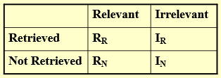
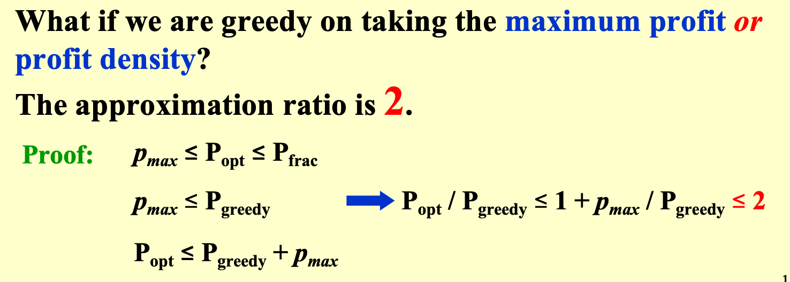

ADS_PPT
为了考试，速通 PPT，简单记录考程序填空代码（也有一些考过的程序填空题
部分程序填空题答案来自 HYLUZ；
也可见这都是几年前的题目，还在用还在用。
AVL Tree¶
RL_Roatation¶
typedef struct TNode *Tree;
struct TNode {
int key, h;
Tree left, right;
};
Tree RL_Rotation( Tree T )
{
Tree K1, K2;
K1 = T->right;
K2 = K1->left;
K1->left = K2->right;
T->right = K2->left;
K2->right = K1;
K2->left=T;
/* Update the heights */
K1->h = maxh(Height(K1->left), Height(K1->right)) + 1;
T->h = maxh(Height(T->left), Height(T->right)) + 1;
K2->h = maxh(K1->h, T->h) + 1;
return K2;
}
Amortized Analysis¶
MultiPop¶
Algorithm(int k, Stack S){
while ( !IsEmpty(S) && k>0 ) {
Pop(S);
k--;
} /* end while-loop */
} // T = min (sizeof(S), k)
但是摊还下来 T(n) = O(n)/n = O(1)
Red-Black Tree¶
IsRBT¶
typedef enum { red, black } colors;
typedef struct RBNode *PtrToRBNode;
struct RBNode{
int Data;
PtrToRBNode Left, Right, Parent;
int BlackHeight;
colors Color;
};
typedef PtrToRBNode RBTree;
// Please fill in the blanks.
bool IsRBT( RBTree T ) {
int LeftBH, RightBH;
if ( !T ) return true;
if ( T->Color == black ) T->BlackHeight = 1;
else {
if ( T->Left && ________) return false; // blank 1
if ( T->Right && (T->Right->Color == red) ) return false;
}
if ( !T->Left && !T->Right ) return true;
if (________) { // blank 2
if ( T->Left ) LeftBH = T->Left->BlackHeight;
else LeftBH = 0;
if ( T->Right ) RightBH = T->Right->BlackHeight;
else RightBH = 0;
if ( LeftBH == RightBH ) {
________; // blank 3
return true;
}
else return false;
}
else return false;
}
// (T->Left->Color == red)
// IsRBT( T->Left ) && IsRBT( T->Right )
// T->BlackHeight += LeftBH
B+ Tree¶
Insert¶
Btree Insert ( ElementType X, Btree T )
{
Search from root to leaf for X and find the proper leaf node;
Insert X;
while ( this node has M+1 keys ) {
split it into 2 nodes with (M+1)/2 and (M+1)/2 keys, respectively;
if (this node is the root)
create a new root with two children;
check its parent;
}
} // T(M,N)=O((M/logM)logN); T_Find(M,N)=O(logN)
FindKey¶
static int order = DEFAULT_ORDER;
typedef struct BpTreeNode BpTreeNode;
struct BpTreeNode {
BpTreeNode** childrens; /* Pointers to childrens. This field is not used by leaf nodes. */
ElementType* keys;
BpTreeNode* parent;
bool isLeaf; /* 1 if this node is a leaf, or 0 if not */
int numKeys; /* This field is used to keep track of the number of valid keys.
In an internal node, the number of valid pointers is always numKeys + 1. */
};
bool FindKey(BpTreeNode * const root, ElementType key){
if (root == NULL) {
return false;
}
inti= 0;
BpTreeNode * node = root;
while (____) { // 空 1
i= 0;
while (i < node->numKeys) {
if (____) i++; // 空 2
else break;
}
node = node->childrens[i];
}
for(i = 0;i< node->numKeys; i++){
if(node->keys[i] == key)
return true;
}
return false;
}
// !(node->isLeaf)
// key >= node->keys[i]
Leftist Heap¶
struct TreeNode {
ElementType Element;
PriorityQueue Left;
PriorityQueue Right;
int Npl;
};
priorityQ merge¶
PriorityQueue Merge ( PriorityQueue H1, PriorityQueue H2 ){
if ( H1 == NULL ) return H2;
if ( H2 == NULL ) return H1
// 将较小的值的根作为合并后的根
if (H1->Element < H2->Element) return Merge1( H1, H2 );
else return Merge1( H2, H1 );
}
static PriorityQueue Merge1( PriorityQueue H1, PriorityQueue H2 ) {
/* H1 is a single node */
if ( H1->Left == NULL ) H1->Left = H2;
/* H1->Right is already NULL and H1->Npl is already 0 */
else {
H1->Right = Merge( H1->Right, H2 ); /* Step 1 & 2 */
if ( H1->Left->Npl < H1->Right->Npl )
SwapChildren(H1); /* Step 3 */
H1->Npl = H1->Right->Npl + 1;
} /* end else */
return H1;
} // Tp = O(log N)
当然也可以合并为一个：
PriorityQueue Merge ( PriorityQueue H1, PriorityQueue H2 ){
if ( H1 == NULL ) return H2;
if ( H2 == NULL ) return H1
// 将较小的值的根作为合并后的根
if (H1->Element < H2->Element)
swap(H1, H2);
/* H1 is a single node */
if ( H1->Left == NULL )
H1->Left = H2;
else {
H1->Right = Merge( H1->Right, H2 ); /* Step 1 & 2 */
if ( H1->Left->Npl < H1->Right->Npl )
SwapChildren(H1); /* Step 3 */
H1->Npl = H1->Right->Npl + 1;
}
}
Binomial Queues¶
implement¶
typedef struct BinNode *Position;
typedef struct Collection *BinQueue;
typedef struct BinNode *BinTree; /* missing from p.176 */
struct BinNode {
ElementType Element;
Position LeftChild;
Position NextSibling;
};
struct Collection {
int CurrentSize; /* total number of nodes */
BinTree TheTrees[MaxTrees];
};
Merge¶
BinQueue Merge( BinQueue H1, BinQueue H2 )
{ BinTree T1, T2, Carry = NULL;
int i, j;
if ( H1->CurrentSize + H2-> CurrentSize > Capacity ) ErrorMessage();
H1->CurrentSize += H2-> CurrentSize;
for ( i=0, j=1; j<= H1->CurrentSize; i++, j*=2 ) {
T1 = H1->TheTrees[i]; T2 = H2->TheTrees[i]; /*current trees */
switch( 4*!!Carry + 2*!!T2 + !!T1 ){
/* 变为 Carry T2 T1 的三位二进制数 */
case 0: /* 000 */
case 1: /* 001 */ break;
case 2: /* 010 */
H1->TheTrees[i] = T2; H2->TheTrees[i] = NULL; break;
case 4: /* 100 */
H1->TheTrees[i] = Carry; Carry = NULL; break;
case 3: /* 011 */
Carry = CombineTrees( T1, T2 );
H1->TheTrees[i] = H2->TheTrees[i] = NULL; break;
case 5: /* 101 */
Carry = CombineTrees( T1, Carry );
H1->TheTrees[i] = NULL; break;
case 6: /* 110 */ Carry = CombineTrees( T2, Carry );
H2->TheTrees[i] = NULL; break;
case 7: /* 111 */ H1->TheTrees[i] = Carry;
Carry = CombineTrees( T1, T2 );
H2->TheTrees[i] = NULL; break;
} /* end switch */
} /* end for-loop */
return H1;
}
DeleteMin¶
ElementType DeleteMin( BinQueue H )
{ BinQueue DeletedQueue;
Position DeletedTree, OldRoot;
ElementType MinItem = Infinity; /* the minimum item to be returned */
int i, j, MinTree; /* MinTree is the index of the tree with the minimum item */
if ( IsEmpty( H ) ) { PrintErrorMessage(); return –Infinity; }
for (i= 0;i< MaxTrees; i++) { /* Step 1: find the minimum item */
if( H->TheTrees[i] && H->TheTrees[i]->Element < MinItem ) {
MinItem = H->TheTrees[i]->Element; MinTree = i; } /* end if */
} /* end for-i-loop */
DeletedTree = H->TheTrees[ MinTree ];
H->TheTrees[ MinTree ] = NULL; /* Step 2: remove the MinTree from H => H’ */
OldRoot = DeletedTree; /* Step 3.1: remove the root */
DeletedTree = DeletedTree->LeftChild; free(OldRoot);
DeletedQueue = Initialize(); /* Step 3.2: create H” */
DeletedQueue->CurrentSize = ( 1<<MinTree ) – 1; /* 2^MinTree – 1 */
for ( j = MinTree – 1; j >= 0; j – – ) {
DeletedQueue->TheTrees[j] = DeletedTree;
DeletedTree = DeletedTree->NextSibling;
DeletedQueue->TheTrees[j]->NextSibling = NULL;
} /* end for-j-loop */
H->CurrentSize – = DeletedQueue->CurrentSize + 1;
H = Merge( H, DeletedQueue ); /* Step 4: merge H’ and H” */
return MinItem;
}
Find¶
The functions BinQueue_Find and Recur_Find are to find X in a binomial queue H. Return the node pointer if found, otherwise return NULL.
BinTree BinQueue_Find( BinQueue H, ElementType X )
{
BinTree T, result = NULL;
int i, j;
for( i=0, j=1; j<=H->CurrentSize; i++, j*=2) { /* for each tree in H */
T= H->TheTrees[i];
if ( X >= T->Element ){/* if need to search inside this tree */
result = Recur_Find(T, X);
if ( result != NULL ) return result;
}
}
return result;
}
BinTree Recur_Find( BinTree T, ElementType X )
{
BinTree result = NULL;
if ( X==T->Element ) return T;
if ( T->LeftChild!=NULL ){
result = Recur_Find(T->LeftChild, X);
if ( result!=NULL ) return result;
}
if ( T->NextSibling!=NULL )
result = Recur_Find(T->NextSibling, X);
return result;
}
DeleteRoot¶
The function DeleteRoot is to delete the root of a subtree with index Ind from a binomial queue H. The rest of the subtree is then stored as a new binomial queue and returned.
其实就是少了找最小根的那一步。
BinQueue DeleteRoot( BinQueue H, int Ind )
{
BinTree OldRoot, SubTree;
BinQueue NewBinQ;
int i;
OldRoot = H->TheTrees[Ind];
SubTree = OldRoot->LeftChild;
free(OldRoot);
NewBinQ = Initialize();
NewBinQ->CurrentSize = ________; // 空 1 ：等号后面
for (________) { // 空 2：循环逻辑
NewBinQ->TheTrees[i] = SubTree;
SubTree = SubTree->NextSibling;
NewBinQ->TheTrees[i]->NextSibling = NULL;
}
return NewBinQ;
}
// (1<<Ind) - 1
// i=Ind-1;i>=0;i--
Inverted File Index¶
这里有两种分布式的策略，其一是根据单词的字典序进行分布式 (Term-partitioned index)，其二是根据文档进行分布式 (Term-partitioned index)。
显然根据单词的内容进行分布式，能够提高索引效率，但是这样的话，我们就需要将所有形式接近的单词都存储在一个地方，这样就会造成单点故障，容灾能力很差，所以这种方式并不是很好。
而第二种办法则有较强的容灾性能。即使一台机器无法工作，也不会剧烈影响到整个系统的工作。
评估标准
 \(\begin{aligned}&1.Precision\text{(准确率)}:\quad P=R_R/(R_R+I_R)\\&\text{准确率表示在搜索到的信息中,相关的(用户想要的)信息的占比。}\\&2.Recall\text{(召回率)}:R=R_R/(R_R+R_N)\\&\text{召回率表示在相关的(用户想要的)信息中,搜索到的占比。}\end{aligned}\)
{kind=link}
{kind=link}
Backtracing¶
Eight Queens（八皇后问题）¶
Find a placement of 8 queens on an 8 x 8 chessboard such that no two queens attack. Two queens are said to attack iff they are in the same row, column, diagonal, or antidiagonal of the chessboard.
The Turnpike Reconstruction Problem（收费公路重建问题）¶
Given N points on the x-axis with coordinates \(x1 < x2 < …< x_N\) . Assume that x1 = 0. There are \(N(N–1)/2\) distances between every pair of points, reconstruct a point set from the distances.
bool Reconstruct ( DistType X[], DistSet D, int N, int left, int right ){ /* X[1]...X[left-1] and X[right+1]...X[N] are solved */
bool Found = false;
if (Is_Empty(D))
return true; /* solved */
D_max = Find_Max(D);
/* option 1：X[right] = D_max */
/* check if |D_max-X[i]| \in D is true for all X[i]’s that have been solved */
OK = Check(D_max,N, left, right ); /* pruning */
if (OK) { /* add X[right] and update D */
X[right] = D_max;
for ( i=1; i<left; i++ ) Delete(|X[right]-X[i]|, D);
for ( i=right+1; i<=N; i++ ) Delete( |X[right]-X[i]|, D);
Found = Reconstruct (X, D, N, left, right-1);
if (!Found) { /* if does not work, undo */
for ( i=1; i<left; i++ ) Insert( |X[right]-X[i]|, D);
for ( i=right+1; i<=N; i++ ) Insert( |X[right]-X[i]|, D);
}
}
/* finish checking option 1 */
if (!Found) { /* if option 1 does not work */
/* option 2: X[left] = X[N]-D_max */
OK = Check( X[N]-D_max, N, left, right );
if ( OK ) {
X[left] = X[N] – D_max;
for ( i=1; i<left; i++ ) Delete( |X[left]-X[i]|, D);
for ( i=right+1; i<=N; i++ ) Delete( |X[left]-X[i]|, D);
Found = Reconstruct (X, D, N, left+1, right );
if (!Found) {
for ( i=1; i<left; i++ ) Insert( |X[left]-X[i]|, D);
for ( i=right+1; i<=N; i++ ) Insert( |X[left]-X[i]|, D);
}
}
/* finish checking option 2 */
} /* finish checking all the options */
return Found;
}
上面的是 PPT 上的伪代码，感觉比较丑陋；下面是 Chap 6 | “Backtracking” 中提到的伪代码，在写编程题时更为常见。
void BackTracing(参数) {
if (终止条件) {
存放结果;
return;
}
for (选择：本层集合中元素（树中节点孩子的数量就是集合的大小）) {
处理节点;
BackTracking(下一个参数);
撤销处理;
BackTracking(下一个参数);
}
}
Template¶
bool Backtracking (int i){
Found = false;
if (i > N)
return true; /* solved with (x1, …, xN) */
for ( each xi \in Si ) {
/* check if satisfies the restriction R */
OK = Check((x1, ... , xi) , R ); /* pruning */
if (OK) {
Count xi in;
Found = Backtracking( i+1 );
if ( !Found )
Undo(i); /* recover to (x1, …, xi-1) */
}
if (Found) break;
}
return Found;
}
Tic-tac-toe（井字棋）¶
规则我就不介绍了，真不会的话可以自己搜索了。
在此处，我们（站在 Computer 的角度上）使用 Minimax Strategy；即是说，Computer 与 Human 在进行一场零和博弈；对于某一决定博弈结果的属性，一方尽量使其最小，另一方尽量使其最大。
例如，在下面的图片中，取这个“属性”为 f(P) ，其与 Computer 获胜的概率成正相关，故 "The human is trying to minimize the value of the position P, while the computer is trying to maximize it."
{kind=link}
Tip
W 是 P 状态下，能够获胜的摆盘方式。对于棋子较少时，可以从反面出发。因为井字棋的获胜摆盘方式只有 8 种（从固定视角看
在上图中，红圆占据了两种，故蓝色方还有 8-2=6 种方式获胜；蓝叉占据了 4 种，红色方还有 8-4=4 种方式获胜。
α-β pruning（α-β 剪枝）¶
{kind=link}
{kind=link}
一般来说，在实施 α-β pruning 后，时间复杂度能够由 O(n) 降至 O(sqrt(n))
Divide & Conqueer¶
Master Theorems
形式一：
形式二：
个人比较喜欢形式二，因为很好地表达了“主”定理的意思：取
k 与 1 的关系表示了 \(af\left( \frac{N}{b} \right) 与 f(N)\) 之间的相对关系，表明了谁是“主”导，而且好记。
形式三：
\(\begin{gathered}T(N)=a\:T(N/b)+\Theta(N^k\log^pN),\mathrm{where~}a\geq1,b>1,\mathrm{~and~}p\geq0\mathrm{~is}\\T(N)=\begin{cases}O(N^{\log_ba})&\mathrm{if~}a>b^k\\O(N^k\log^{p+1}N)&\mathrm{if~}a=b^k\\O(N^k\log^pN)&\mathrm{if~}a<b^k\end{cases}\end{gathered}\)
Closet Points Problem¶
/* points are all in the strip */
/* and sorted by y coordinates */
for (i= 0;i< NumPointsInStrip; i++ )
for ( j =i+ 1; j < NumPointsInStrip; j++ )
if ( Dist_y( Pi , Pj ) > δ )
break;
else if ( Dist( Pi , Pj ) < δ )
δ = Dist( Pi , Pj );
Greedy Algorithm¶
Activity Selection Problem¶
Given a set of activities S=a1,a2,...,an that wish to use a resource (e.g. a classroom). Each ai takes place during a time interval [si,fi).
Activities ai and aj are compatible if si≥fj or sj≥fi (i.e. their time intervals do not overlap).
Goal: Select a maximum-size subset of mutually compatible activities.
- Assume f1≥f2≥...≥fn.
这实际上是一个一维平铺问题，使用贪婪算法的话，从前向后，每次选取不冲突的活动中，最早结束的那个活动即可。
Huffman's Algorithm¶
下面的伪代码来自 PPT ，看不懂在干什么；haffman's code 本身很好理解：按照出现频率排序，每次选择最低频率的两个作为二叉树的两个节点并合出其父节点；依次类推直到构建一颗完整的二叉树，所有词都
void Huffman ( PriorityQueue heap[], int C ){
consider the C characters as C single node binary trees,
and initialize them into a min heap;
for (i= 1;i< C; i++ ) {
create a new node;
/* be greedy here */
delete root from min heap and attach it to left_child of node;
delete root from min heap and attach it to right_child of node;
weight of node = sum of weights of its children;
/* weight of a tree = sum of the frequencies of its leaves */
insert node into min heap;
}
} // T=O(C logC)
Dynamic Programming¶
Fibonacci¶
int Fib( int N )
{
if ( N <= 1 )
return 1;
else
return Fib( N - 1 ) + Fib( N - 2 );
}
int Fibonacci ( int N )
{ int i, Last, NextToLast, Answer;
if ( N <= 1 ) return 1;
Last = NextToLast = 1; /* F(0) = F(1) = 1 */
for (i= 2;i<= N; i++ ) {
Answer = Last + NextToLast; /* F(i) = F(i-1) + F(i-2) */
NextToLast = Last; Last = Answer; /* update F(i-1) and F(i-2) */
}
return Answer;
}
Ordering Matrix Multiplications¶
{kind=link}
/* r contains number of columns for each of the N matrices */
/* r[0] is the number of rows in matrix 1 */
/* Minimum number of multiplications is left in M[ 1 ][ N ] */
void OptMatrix( const long r[ ], int N, TwoDimArray M )
{ int i, j, k, L;
long ThisM;
for(i= 1;i<= N; i++ ) M[i][i] = 0;
for( k = 1; k < N; k++ ) /* k = j -i*/
for(i= 1;i<= N - k; i++ ) { /* For each position */
j =i+k; M[i][j] = Infinity;
for (L = i; L < j; L++ ) {
ThisM = M[i][L] + M[L+1][j] + r[i-1] * r[L] * r[j];
if (ThisM < M[i][j]) /* Update min */
M[i][j] = ThisM;
} /* end for-L */
} /* end for-Left */
}
\(T(N) = O(N^3)\)
Optimal Binary Search Tree¶
Given N words w1 < w2 < …… < wN, and the probability of searching for each wi is pi . Arrange these words in a binary search tree in a way that minimize the expected total access time. \(T(N)=\sum_{i=1}^Np_i\cdot(1+d_i)\)
如果我们记：
{kind=link}
All-Pairs Shortest Path¶
Floyd-Warshall 算法
{kind=link}
/* A[ ] contains the adjacency matrix with A[i][i] = 0 */
/* D[ ] contains the values of the shortest path */
/* N is the number of vertices */
/* A negative cycle exists iff D[i][i] < 0 */
void AllPairs( TwoDimArray A, TwoDimArray D, int N )
{ int i, j, k;
for (i= 0;i< N; i++ ) /* Initialize D */
for( j = 0; j < N; j++ )
D[i][j] = A[i][j];
for( k = 0; k < N; k++ ) /* add one vertex k into the path */
for(i= 0;i< N; i++ )
for( j = 0; j < N; j++ )
if( D[i][k] + D[k][j] < D[i][j] )
/* Update shortest path */
D[i][j] = D[i][k] + D[k][j];
}
\(T(N)=O(N^3)\), faster in a dense graph.
Decode¶
建议看清题目，不然就像某位同学一样填反了……，下图中是正确填空。
{kind=link}
NP-Completeness¶
{kind=link}
halting problem¶
Loop( P ) {
/* 1 */ if ( P(P) loops ) print (YES);
/* 2 */ else infinite_loop();
}
Loop(Loop); // contradiction
NP complete¶
{kind=link}
规约 (Reduce) ¶
{kind=link}

符 _ 号 \(A \leq_p B\) 的含义是 A no harder than B，A 可以被规约为 B 。
图片来自某手写笔记，来源不详，如有不当请留言或者联系我。
A language L1 is polynomial-time reducible to a language L2 ( L1 ≤P L2 ) if there exists a polynomial-time computable function f : {0, 1} → {0,1} such that for all \(x \{0, 1\}*, x \in L1 \iff f (x) \in L2\).
CP 2 VCP¶
{kind=link}
proof: G has a clique of size K iff \(\overline{G}\) has a vertex cover of size |V| - K.
Approximate¶
Approximate Bin Packing¶
Given N items of sizes S1 , S2 , …, SN , such that \(0 < S_{i} \leq1\) for all \(1 \leq i \leq N\) . Pack these items in the fewest number of bins, each of which has unit capacity.
- NextFit
- \(\leq 2M-1\)
- FirstFit
- \(\leq 1.7M\)
- BestFit
- \(\leq 1.7 M\)
- First Fit Decreasing(offline)
- \(\leq \frac{11M + 6}{9}\)
void FirstFit ( )
{ while ( read item ) {
scan for the first bin that is large enough for item;
if ( found )
place item in that bin;
else
create a new bin for item;
} /* end-while */
}
void FirstFit ( )
{ while ( read item ) {
scan for the first bin that is large enough for item;
if ( found )
place item in that bin;
else
create a new bin for item;
} /* end-while */
}
The Knapsack Problem¶
- fractional version
- greedy with maximum profit density pi / wi
- 0-1 version
- \(p_{max}\) 表示价值最高的物品 
{kind=link}
The K-center Problem¶
Centers Greedy-2r ( Sites S[ ], int n, int K, double r )
{ Sites S’[ ] = S[ ]; /* S’ is the set of the remaining sites */
Centers C[ ] = empty;
while ( S’[ ] != empty ) {
Select any s from S’ and add it to C;
Delete all s’ from S’ that are at dist(s’, s) 2r;
} /* end-while */
if ( |C| K ) return C;
else ERROR(No set of K centers with covering radius at most r);
}
Centers Greedy-Kcenter ( Sites S[ ], int n, int K )
{ Centers C[ ] = ;
Select any s from S and add it to C;
while ( |C| < K ) {
Select s from S with maximum dist(s, C);
Add s it to C;
} /* end-while */
return C;
}
Local search¶
SolutionType Gradient_descent()
{ Start from a feasible solution S \in FS ;
MinCost = cost(S);
while (1) {
S’ = Search( N(S) ); /* find the best S’ in N(S) */
CurrentCost = cost(S’);
if ( CurrentCost < MinCost ) {
MinCost = CurrentCost; S = S’;
}
else break;
}
return S;
}
The Vertex Cover Problem¶
SolutionType Metropolis() { // Simulated Annealing
Define constants k and T;
Start from a feasible solution S \in FS ;
MinCost = cost(S);
while (1) {
S’ = Randomly chosen from N(S);
CurrentCost = cost(S’);
if ( CurrentCost < MinCost ) {
MinCost = CurrentCost; S = S’;
}
else {
With a probability e^{-\Delta cost / (kT)}, let S = S’;
else break;
}
}
return S;
}
Hopfield Neural Networks¶
ConfigType State_flipping()
{
Start from an arbitrary configuration S;
while ( ! IsStable(S) ) {
u = GetUnsatisfied(S);
su = - su;
}
return S;
}
The Maximum Cut Problem¶
不难发现是一个特殊的 HNN 问题。
May not terminate in polynomial time: stop if the improvement is not big enough:

Hiring Problem¶
int Hiring ( EventType C[ ], int N )
{ /* candidate 0 is a least-qualified dummy candidate */
int Best = 0;
int BestQ = the quality of candidate 0;
for ( i=1; i<=N; i++ ) {
Qi = interview( i ); /* Ci */
if ( Qi > BestQ ) {
BestQ = Qi;
Best = i;
hire( i ); /* Ch */
}
}
return Best;
} // worse case if candidate gets better and better => O(N(C_i + C_h))
int RandomizedHiring ( EventType C[ ], int N )
{ /* candidate 0 is a least-qualified dummy candidate */
int Best = 0;
int BestQ = the quality of candidate 0;
randomly permute the list of candidates;
for ( i=1; i<=N; i++ ) {
Qi = interview( i ); /* Ci */
if ( Qi > BestQ ) {
BestQ = Qi;
Best = i;
hire( i ); /* Ch */
}
}
} // E = O(N*C_i + ln(N)*C_h)
int OnlineHiring ( EventType C[ ], int N, int k )
{
int Best = N;
int BestQ = - \infty;
for ( i=1; i<=k; i++ ) {
Qi = interview( i );
if ( Qi > BestQ ) BestQ = Qi;
}
for ( i=k+1; i<=N; i++ ) {
Qi = interview( i );
if ( Qi > BestQ ) {
Best = i;
break;
}
}
return Best;
}
{kind=link}
使用积分对最后的 Pr[S] 进行放缩得到：\(\frac kN\ln\left(\frac Nk\right)\leq\Pr[S]\leq\frac kN\ln\left(\frac{N-1}{k-1}\right)\)
Parallel Algorithms¶
The summation problem¶
{kind=link}
右侧的空圆表示闲置的 processers
for Pi , 1 ≤ i ≤ n pardo
B(0, i) := A( i )
for h = 1 to log n do
if i ≤ n/2^h
B(h, i) := B(h-1, 2i-1) + B(h-1, 2i)
else stay idle
for i = 1: output B(log n, 1);
for i > 1: stay idle
{kind=link}
注意是第三条是小于等于（错过一次
） 。
for Pi , 1 ≤ i ≤ n pardo // use time 1
B(0, i) := A( i )
for h = 1 to log n // use time log(n)
for Pi, 1 ≤ i ≤ n/2h pardo
B(h, i) := B(h-1, 2i-1) + B(h-1, 2i)
for i = 1 pardo // use time 1
output B(log n, 1)
- T(n) = log(n) + 2
- W(n) = n + n/2 + n/4 + ... + 1 => 2n = O(n)
- 任何 WD 模型的 algorithm，用 P(n) 个 processor，运行时间都至多为 \(O\left( \frac{W(n)}{P(n)}+T(n) \right)\) （处理器充足可加速，不充足也能够运行）
【WD-presentation Sufficiency Theorem】An algorithm in the WD mode can be implemented by any P(n) processors within O(W(n)/P(n) + T(n)) time, using the same concurrent-write convention as in the WD presentation.
Prefix-Sums¶
for Pi , 1 ≤ i ≤ n pardo // use time 1
B(0, i) := A(i)
for h = 1 to log n // use time log(n)
for i , 1 ≤ i ≤ n/2h pardW()o
B(h, i) := B(h - 1, 2i - 1) + B(h - 1, 2i)
for h = log n to 0 // use time log(n)
for i even, 1 ≤ i ≤ n/2h pardo
C(h, i) := C(h + 1, i/2)
for i = 1 pardo
C(h, 1) := B(h, 1)
for i odd, 3 ≤ i ≤ n/2h pardo
C(h, i) := C(h + 1, (i - 1)/2) + B(h, i)
for Pi , 1 ≤ i ≤ n pardo // use time 1
Output C(0, i)
- T(n) = 2log(n)+2 = O(log(n))
- W(n) = O(n)
Merging => ranking¶
- binary search
- T(n)=log(n)
- W(n)=nlog(n)
- serial ranking ( 二者不等长 )
- T(n)=O(n+m)
- W(n)=O(n+m)
- Parallel Ranking
- T(n)=O(log(n))
- W(n)=O(n)
Maximum Finding¶
- summation problem 中 + 换为 max()
- T(n)=log(n)
- W(n)=O(n)
- compare all pairs
- T(n)=1
- W(n)=O(n^2)
- Doubly-logarithmic Paradigm
- T(n)=O(log(log(n)))
- W(n)=O(n)
- Random Sampling
- T(n)=O(1)
- W(n)=O(n)
- Pr[wrong]= \(O\left( \frac{1}{n^c}\right)\) & O(n) processers required.